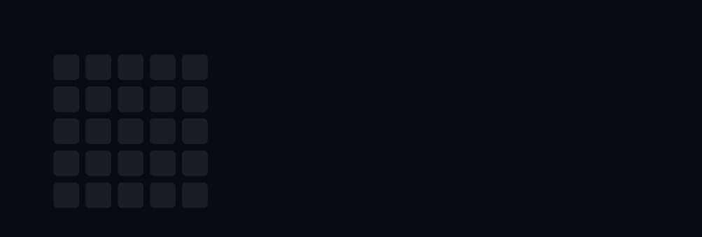
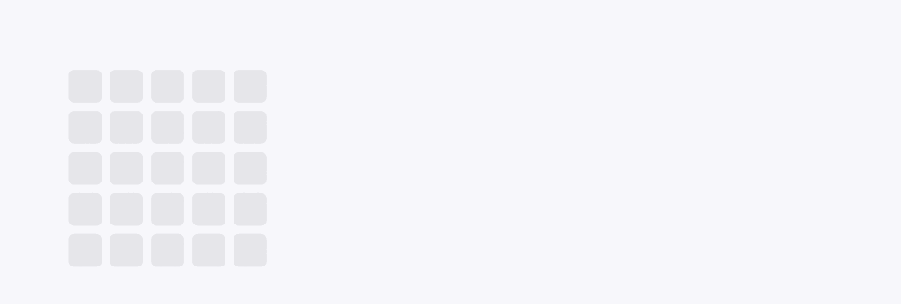
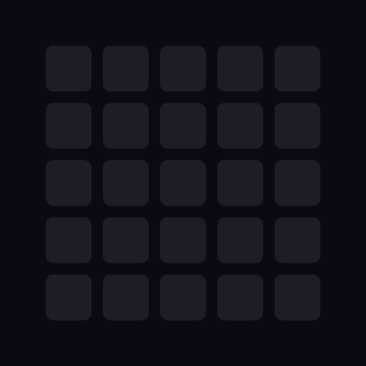
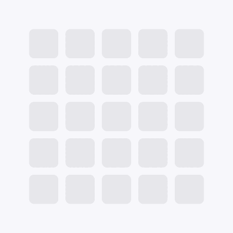

The Pixel Grid Z writes itself one cell at a time, in the order you'd actually draw a Z: top rail, diagonal, bottom rail. Each new cell lands in Grid Teal and settles to Pixel Purple — a write head moving through the grid. The mark dissolves in the same order and loops every 3.6 seconds.
Site header · presentation title slides · video intros

zeplo-lockup-dark.gif

zeplo-lockup-light.gif
Loading states · avatars · favicon source · social profile

zeplo-mark-dark.gif

zeplo-mark-light.gif
Transparent · ~5 KB · resolution independent · respects reduced motion
zeplo-mark-animated.svg
zeplo-mark-animated.svg
zeplo-lockup-animated.svg
| File | Use it for |
|---|---|
| zeplo-mark-animated.svg | Site header, loading spinner, anywhere on zeplostudio.com. Smallest and sharpest. |
| zeplo-lockup-animated.svg | Hero or splash on the site. Needs Space Grotesk + DM Mono loaded on the page. |
| zeplo-lockup-dark.gif | Fiverr profile, LinkedIn, email signature, Slack, anywhere SVG isn't supported. |
| zeplo-mark-dark.gif | Square avatar slots — social profiles, Slack, WhatsApp Business. |
| zeplo-mark-static.svg | Favicon, print, app icons, anywhere motion is wrong. |
<!-- Header: inline the SVG so it inherits page fonts and CSS --> <img src="/static/zeplo-mark-animated.svg" alt="Zeplo Studio" width="44" height="44"> <!-- Favicon set, generated from zeplo-mark-static.svg --> <link rel="icon" href="/static/favicon.svg" type="image/svg+xml"> <link rel="icon" href="/static/favicon-32.png" sizes="32x32"> <link rel="apple-touch-icon" href="/static/apple-touch-icon.png">
Accessibility: the animated SVG includes a
prefers-reduced-motion rule — motion is disabled and the finished mark shown
instead. The GIFs cannot do this, so don't use a GIF as the permanent site header.
Minimum size: the mark stops reading as a Z below about 24 px. Use the static SVG under that.
Clear space: leave at least one grid cell of empty space on every side — that's roughly 20% of the mark's height.